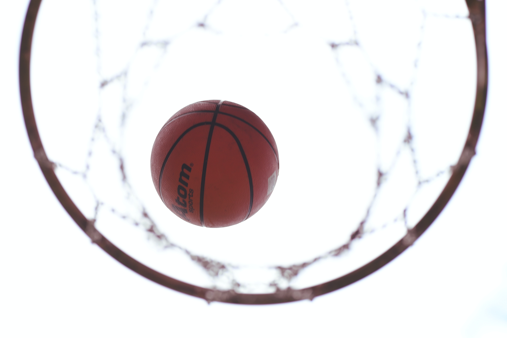

My Favorite Hobby
Play Basketball
I loved to play basketball ever since I was 9. Yep I started playing basketball at 9, I was not that good at the start but when I continued and started my first game I became better. I remember when I made my first goal, I was so happy even by dad was to. So I begined to practice more and more, imprving in skill more and more. Until when I became who I am know. A dude who likes basketball!
My coach in basketball is training us for provincials after we finished playing our last normal game. I am hoping i'm going
to be there playing provincials with my team.
Click here to for more information